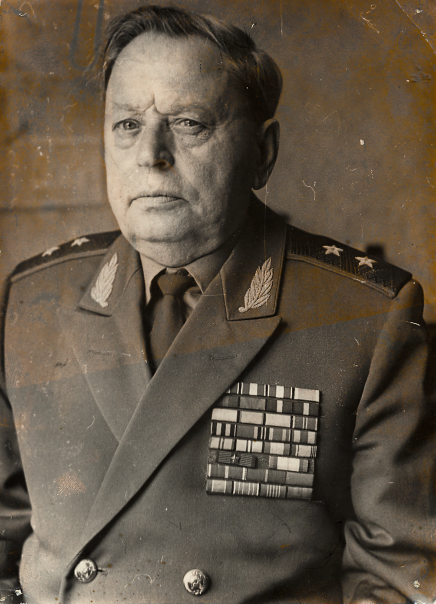

Шестаков Александр Иванович
Шестаков Александр Иванович
(20.12.1914 – 09.03.1996)
Родился в деревне Монастырь Шестаковской волости, ныне Кичменгского сельского поселение, в семье крестьянина.
В 1931 году получил семилетнее образование и два года работал в сберегательной кассе.
До октября 1935 года работал техническим секретарем райкома ВКП (б) в Кичменгском Городке.
В 1934 году участвовал в эстафете лыжного комсомольского кросса «Архангельск – Москва» в честь 17 съезда ВКП (б).
В 1935 году был призван в Красную армию и был направлен в Лениградское военное пехотное училище им. С.М. Кирова, которое окончил в 1938 году. После окончания училища проходил службу в Ленинградском и Прибалтийском военных округах в должностях командира взвода, начальника полковой школы и командира учебного батальона. В мае 1941 года зачислен слушателем Военной Академии им. М.В Фрунзе.
В начале Великой Отечественной войны был назначен заместителем командира стрелкового полка вновь формируемой 8 стрелковой дивизии (САВО) и, в ее составе, убыл на фронт. С мая 1942 года по май 1944 года был начальником оперативного отделения и начальником штаба 8 стрелковой дивизии, а затем начальником штаба 2 гвардейской воздушно десантной дивизии. В годы Великой Отечественной войны участвовал в боях Брянского (1942 г.), Центрального (1943 г.), 1-го Украинского (1943-44 гг.) и 4-го Украинского (1944-45 гг.) фронтов.
В послевоенное время, оставаясь в кадрах Советской Армии, работал и учился. В 1948 году окончил одногодичные курсы командиров стрелковых дивизий, в 1950 году заочный факультет Военной академии им. Фрунзе, а в 1954 году Академию Генерального штаба Вооруженных Сил СССР. Последовательно выполнял различные штабные и командные должности (зам. командира и начальника штаба механизированной дивизии – 3 года, военный советник – 2,5 года, начальник штаба армейского корпуса – 3 года, командир мотострелковой дивизии – 3 года, начальник штаба Армии – 3,5 года. Последовательно занимал также различные штабные должности на территории Албании и Чехословакии.
С августа 1964 года по 1967 года – начальник штаба, Первый заместитель Командующего войсками и член Военного Совета Приволжского военного округа. С декабря 1967 года – первый заместитель начальника Главного штаба сухопутных войск. В 1958 году А.И. Шестакову было присвоено звание «генерал-майор», в 1967 году – «генерал-лейтенант». С июля 1973 года он представитель Главнокомандующего Объединенными Силами государств – участников Варшавского Договора при начальнике Генерального штаба Чехословацкой народной армии.
В отставку вышел в 1976 году. Награжден: тремя орденами Красного Знамени, орденом Богдана Хмельницкого 2 степени, орденами Отечественной войны 1 и 2 степени, двумя орденами Красной Звезды и орденом «За службу Родине в Вооруженных Силах СССР» 3 степени, медалями «За отвагу», «За боевые заслуги» и девятью другими юбилейными медалями СССР. Орденом Красной Звезды и пятью медалями Чехословацкой ССР, а также четырьмя медалями Монгольской Народной Республики. Почетный гражданин города Косово, Ивано - Франковской области УСССР и г. Нови-Йичин Северо-Моравской области ЧССР.
Приезжал неоднократно на свою малую родину в село Шестаково к брату Анатолию Ивановичу. Умер и похоронен в Москве.
В 1935 году был призван в Красную армию и был направлен в Лениградское военное пехотное училище им. С.М. Кирова, которое окончил в 1938 году. После окончания училища проходил службу в Ленинградском и Прибалтийском военных округах в должностях командира взвода, начальника полковой школы и командира учебного батальона. В мае 1941 года зачислен слушателем Военной Академии им. М.В Фрунзе.
В начале Великой Отечественной войны был назначен заместителем командира стрелкового полка вновь формируемой 8 стрелковой дивизии (САВО) и, в ее составе, убыл на фронт. С мая 1942 года по май 1944 года был начальником оперативного отделения и начальником штаба 8 стрелковой дивизии, а затем начальником штаба 2 гвардейской воздушно десантной дивизии. В годы Великой Отечественной войны участвовал в боях Брянского (1942 г.), Центрального (1943 г.), 1-го Украинского (1943-44 гг.) и 4-го Украинского (1944-45 гг.) фронтов.
В послевоенное время, оставаясь в кадрах Советской Армии, работал и учился. В 1948 году окончил одногодичные курсы командиров стрелковых дивизий, в 1950 году заочный факультет Военной академии им. Фрунзе, а в 1954 году Академию Генерального штаба Вооруженных Сил СССР. Последовательно выполнял различные штабные и командные должности (зам. командира и начальника штаба механизированной дивизии – 3 года, военный советник – 2,5 года, начальник штаба армейского корпуса – 3 года, командир мотострелковой дивизии – 3 года, начальник штаба Армии – 3,5 года. Последовательно занимал также различные штабные должности на территории Албании и Чехословакии.
С августа 1964 года по 1967 года – начальник штаба, Первый заместитель Командующего войсками и член Военного Совета Приволжского военного округа. С декабря 1967 года – первый заместитель начальника Главного штаба сухопутных войск. В 1958 году А.И. Шестакову было присвоено звание «генерал-майор», в 1967 году – «генерал-лейтенант». С июля 1973 года он представитель Главнокомандующего Объединенными Силами государств – участников Варшавского Договора при начальнике Генерального штаба Чехословацкой народной армии.
В отставку вышел в 1976 году. Награжден: тремя орденами Красного Знамени, орденом Богдана Хмельницкого 2 степени, орденами Отечественной войны 1 и 2 степени, двумя орденами Красной Звезды и орденом «За службу Родине в Вооруженных Силах СССР» 3 степени, медалями «За отвагу», «За боевые заслуги» и девятью другими юбилейными медалями СССР. Орденом Красной Звезды и пятью медалями Чехословацкой ССР, а также четырьмя медалями Монгольской Народной Республики. Почетный гражданин города Косово, Ивано - Франковской области УСССР и г. Нови-Йичин Северо-Моравской области ЧССР.
Приезжал неоднократно на свою малую родину в село Шестаково к брату Анатолию Ивановичу. Умер и похоронен в Москве.